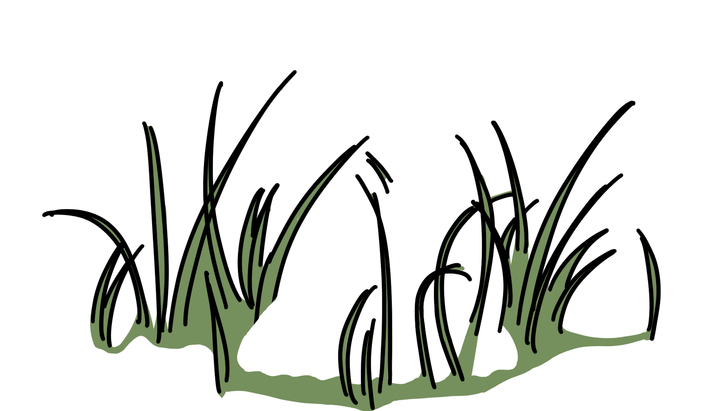

Lyme Disease is an increasingly-common bacterial infection transmitted by ticks with a wide variety of symptoms. When an infection occurs, it’s important to treat it with antibiotics as soon as possible.
Scroll to begin.
Many of the symptoms that develop in Lyme infections appear in other common diseases and are commonly confused with each other - that’s why it’s so hard to nail down a Lyme Disease diagnosis.
The other thing about Lyme disease - it can go on for a long time.

Especially during summer and fall months, tick bites are common. Ticks are small, and can be hard to see, but it's important to check yourself and your pets for ticks after spending time outdoors.
If you find a tick, remove it carefully and monitor for symptoms. Early detection is important because Lyme disease can become more difficult to treat over time.
Long Lyme is a serious condition. Left untreated, an infection can spread well beyond the bite site and affect joints, the nervous system, and more.
Many of the symptoms that develop in Lyme infections appear in other common diseases and are commonly confused with each other - that’s why it’s so hard to nail down a Lyme Disease diagnosis. Also, finding the tick can be really hard.
Scroll over the visualization on the right.
While your mouse is over the visualization, your mouse wheel controls the timeline instead of scrolling the page.
Move your mouse back over this text to continue scrolling to Step 4.
Final visualization.